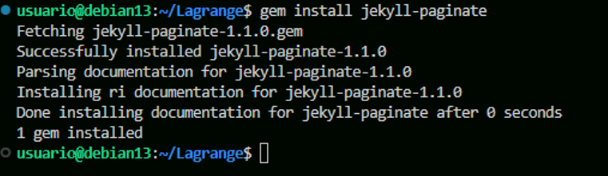

Ejercicio 2: Creación de un sitio web en Jekyll con el tema Lagrange
1. Conseguir el tema Lagrange:
Para obtener el tema Lagrange y poder usarlo en nuestro repositorio, hay varios metodos, en este caso lo he obtenido haciendo un Fork al repositorio de GitHub del tema, para eso se puede buscar directamente el repositorio o ir desde la pagina jekyllthemes.org

Cuando estes en la pagina del tema, tienes que ir a homepage

Una vez en el repositorio, hay que hacerle un fork para poder clonarlo en local y empezar a modificarlo


Despues de hacer el fork, ya tendremos el repositorio con el tema Lagrange listo para configurarlo, ahora hay que ir a nuestra maquina local y clonar nuestro repositorio a local con el comando:
git clone https://github.com/yerayyeray/Lagrange.git
Ahora ya tenemos el repositorio clonado y podemos modificar los archivos para crear el nuevo sitio web

En mi caso, tuve que actualizar la gema jekyll-sitemap e instalar jekyll-paginate:


2. Configuración del sitio:
Archivo de configuración del sitio:
Ahora tenemos que configurar el archivo de configuración de _config.yaml del nuevo sitio

Crear los posts del blog:
Crear los post es igual que en el otro sitio, los posts se guardan en /_posts

Y tendran que tener el mismo formato para el nombre de los archivos año-mes-dia-nombre_del_post y los post tendran esta estructura:

Cambial la pagina de "Acerca de":
Para personalizar la sección "Acerca de" hay que ir al archivo about.md en la carpeta menu y poner la información de nuestro sitio

Pagina de contacto:
Este tema tiene una pagina de contacto también en la carpeta menu el archivo contact.md

3. Subir el sitio a GitHub Pages:
Antes de subir el repositorio primero hay que hacer los commits de todos los cambios que se han hecho en el repositorio si aún no se han hecho con los comandos:
git add .
git commit -m "comentario"
Si se quiere subir directamente a GitHub Pages se puede hacer subiendolo al remoto desde la rama gh-pages, la cual se puede crear así:
git checkout -b gh-pages
Si no se hace así, se puede hacer desde la interfaz de GitHub desde aquí:

Despues, se hara el push con el comando:
git push origin gh-pages
4. Sitio web subido en GitHub Pages:
La url de la pagina es esta:
https://yerayyeray.github.io/Lagrange/
Este es el aspecto que tiene el sitio web ya subido en GitHub Pages:
Inicio:


Acerca de:

Contacto:

Posts:


Todo: